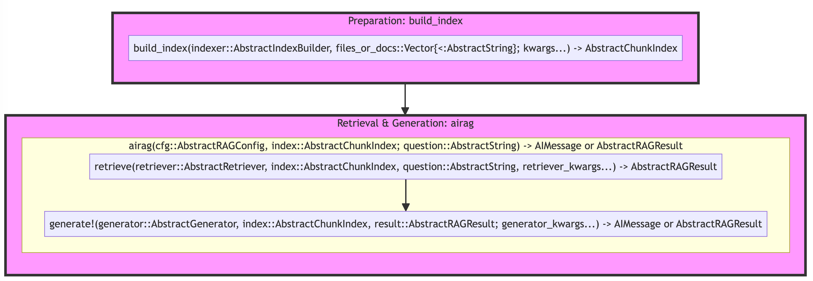
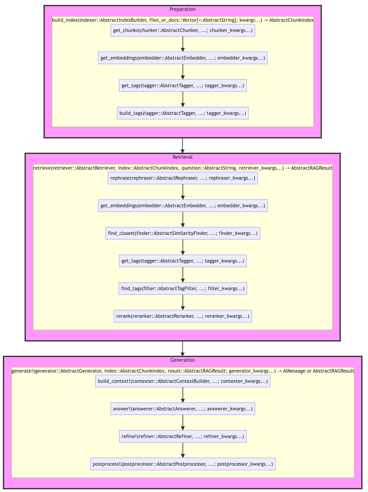

RAG Interface
System Overview
This system is designed for information retrieval and response generation, structured in three main phases:
- Preparation, when you create an instance of
AbstractIndex - Retrieval, when you surface the top most relevant chunks/items in the
indexand returnAbstractRAGResult, which contains the references to the chunks (AbstractCandidateChunks) - Generation, when you generate an answer based on the context built from the retrieved chunks, return either
AIMessageorAbstractRAGResult
The corresponding functions are build_index, retrieve, and generate!, respectively. Here is the high-level diagram that shows the signature of the main functions:

Notice that the first argument is a custom type for multiple dispatch. In addition, observe the "kwargs" names, that's how the keyword arguments for each function are passed down from the higher-level functions (eg, build_index(...; chunker_kwargs=(; separators=...)))). It's the simplest way to customize some step of the pipeline (eg, set a custom model with a model kwarg or prompt template with template kwarg).
The system is designed to be hackable and extensible at almost every entry point. If you want to customize the behavior of any step, you can do so by defining a new type and defining a new method for the step you're changing, eg,
using RAGTools: rerank
struct MyReranker <: AbstractReranker end
rerank(::MyReranker, index, candidates) = ...And then you would set the retrive step to use your custom MyReranker via reranker kwarg, eg, retrieve(....; reranker = MyReranker()) (or customize the main dispatching AbstractRetriever struct).
The overarching principles are:
- Always dispatch / customize the behavior by defining a new
Structand the corresponding method for the existing functions (eg,rerankfunction for the re-ranking step). - Custom types are provided as the first argument (the high-level functions will work without them as we provide some defaults).
- Custom types do NOT have any internal fields or DATA (with the exception of managing sub-steps of the pipeline like
AbstractRetrieverorRAGConfig). - Additional data should be passed around as keyword arguments (eg,
chunker_kwargsinbuild_indexto pass data to the chunking step). The intention was to have some clearly documented default values in the docstrings of each step + to have the various options all in one place.
RAG Diagram

The main functions are:
Prepare your document index with build_index:
- signature:
(indexer::AbstractIndexBuilder, files_or_docs::Vector{<:AbstractString}) -> AbstractChunkIndex - flow:
get_chunks->get_embeddings->get_tags->build_tags - dispatch types:
AbstractIndexBuilder,AbstractChunker,AbstractEmbedder,AbstractTagger
Run E2E RAG with airag:
- signature:
(cfg::AbstractRAGConfig, index::AbstractChunkIndex; question::AbstractString)->AIMessageorAbstractRAGResult - flow:
retrieve->generate! - dispatch types:
AbstractRAGConfig,AbstractRetriever,AbstractGenerator
Retrieve relevant chunks with retrieve:
- signature:
(retriever::AbstractRetriever, index::AbstractChunkIndex, question::AbstractString) -> AbstractRAGResult - flow:
rephrase->get_embeddings->find_closest->get_tags->find_tags->rerank - dispatch types:
AbstractRAGConfig,AbstractRephraser,AbstractEmbedder,AbstractSimilarityFinder,AbstractTagger,AbstractTagFilter,AbstractReranker
Generate an answer from relevant chunks with generate!:
- signature:
(generator::AbstractGenerator, index::AbstractChunkIndex, result::AbstractRAGResult)->AIMessageorAbstractRAGResult - flow:
build_context!->answer!->refine!->postprocess! - dispatch types:
AbstractGenerator,AbstractContextBuilder,AbstractAnswerer,AbstractRefiner,AbstractPostprocessor
To discover the currently available implementations, use subtypes function, eg, subtypes(AbstractReranker).
Passing Keyword Arguments
If you need to pass keyword arguments, use the nested kwargs corresponding to the dispatch type names (rephrase step, has rephraser dispatch type and rephraser_kwargs for its keyword arguments).
For example:
cfg = RAGConfig(; retriever = AdvancedRetriever())
# kwargs will be big and nested, let's prepare them upfront
# we specify "custom" model for each component that calls LLM
kwargs = (
retriever = AdvancedRetriever(),
retriever_kwargs = (;
top_k = 100,
top_n = 5,
# notice that this is effectively: retriever_kwargs/rephraser_kwargs/template
rephraser_kwargs = (;
template = :RAGQueryHyDE,
model = "custom")),
generator_kwargs = (;
# pass kwargs to `answer!` step defined by the `answerer` -> we're setting `answerer_kwargs`
answerer_kwargs = (;
model = "custom"),
# api_kwargs can be shared across all components
api_kwargs = (;
url = "http://localhost:8080")))
result = airag(cfg, index, question; kwargs...)If you were one level deeper in the pipeline, working with retriever directly, you would pass:
retriever_kwargs = (;
top_k = 100,
top_n = 5,
# notice that this is effectively: rephraser_kwargs/template
rephraser_kwargs = (;
template = :RAGQueryHyDE,
model = "custom"),
# api_kwargs can be shared across all components
api_kwargs = (;
url = "http://localhost:8080"))
result = retrieve(AdvancedRetriever(), index, question; retriever_kwargs...)And going even deeper, you would provide the rephraser_kwargs directly to the rephrase step, eg,
rephrase(SimpleRephraser(), question; model="custom", template = :RAGQueryHyDE, api_kwargs = (; url = "http://localhost:8080"))Deepdive
Preparation Phase:
- Begins with
build_index, which creates a user-defined index type from an abstract chunk index using specified dels and function strategies. get_chunksthen divides the indexed data into manageable pieces based on a chunking strategy.get_embeddingsgenerates embeddings for each chunk using an embedding strategy to facilitate similarity arches.- Finally,
get_tagsextracts relevant metadata from each chunk, enabling tag-based filtering (hybrid search index). If there aretagsavailable,build_tagsis called to build the corresponding sparse matrix for filtering with tags.
Retrieval Phase:
- The
retrievestep is intended to find the most relevant chunks in theindex. rephraseis called first, if we want to rephrase the query (methods likeHyDEcan improve retrieval quite a bit)!get_embeddingsgenerates embeddings for the original + rephrased queryfind_closestlooks up the most relevant candidates (CandidateChunks) using a similarity search strategy.get_tagsextracts the potential tags (can be provided as part of theairagcall, eg, when we want to use only some small part of the indexed chunks)find_tagsfilters the candidates to strictly match at least one of the tags (if provided)rerankis called to rerank the candidates based on the reranking strategy (ie, to improve the ordering of the chunks in context).
Generation Phase:
- The
generate!step is intended to generate a response based on the retrieved chunks, provided viaAbstractRAGResult(eg,RAGResult). build_context!constructs the context for response generation based on a context strategy and applies the necessary formattinganswer!generates the response based on the context and the queryrefine!is called to refine the response (optional, defaults to passthrough)postprocessing!is available for any final touches to the response or to potentially save or format the results (eg, automatically save to the disk)
Note that all generation steps are mutating the RAGResult object.
See more details and corresponding functions and types in src/rag_interface.jl.